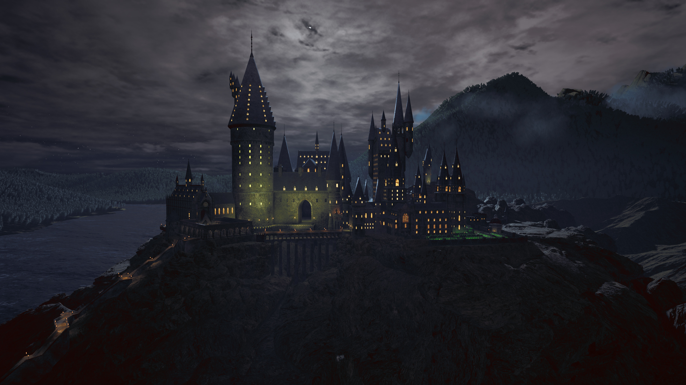

Hogwarts é uma escola de magia em que jovens bruxos aprendem a controlar e usar seus poderes com sabedoria e segurança. O castelo encontra-se nas montanhas da Escócia, recebendo estudantes de diferentes famílias bruxas para aprenderem feitiços, poções, herbologia e defesa contra as artes das trevas. A escola é dividida em quatro casas: Grifinória, Sonserina, Corvinal e Lufa-Lufa, cada uma representando valores e características diferentes, como: coragem, ambição, inteligência e lealdade. Ao entrarem em Hogwarts, os alunos são selecionados para uma dessas casas por meio do Chapéu Seletor.
O castelo de Hogwarts é conhecido pela sua magia, mistérios, suas escadarias móveis, quadros que falam e criaturas mágicas. Além das aulas, os estudantes vivem grandes aventuras, criam amizades inesquecíveis e enfrentam desafios que marcam suas vidas para sempre. Aqui no portal, você pode ver mais sobre as casas, feitiços famosos ensinados na escola, e realizar o teste do chapéu seletor online.